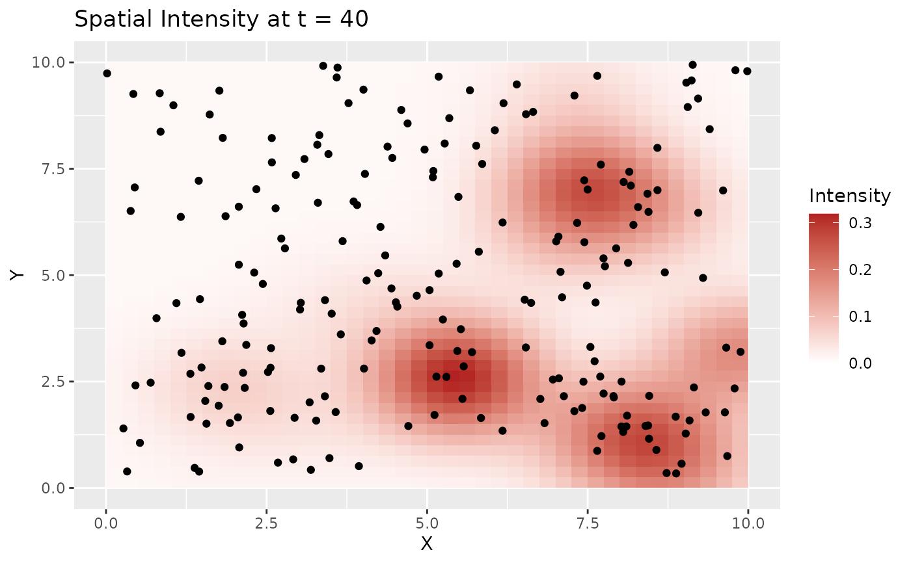
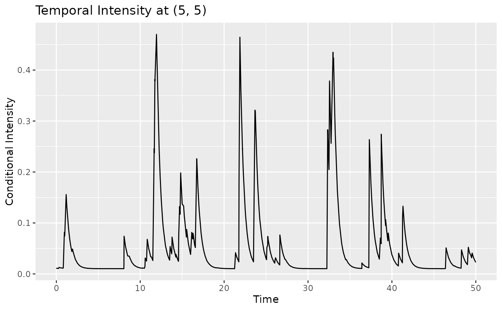

Visualizes the conditional intensity over space or time given a fitted Hawkes model.
Arguments
- hawkes
A
hawkesobject- est
A list of fitted parameter values for the Hawkes process.
- stepsize
A numeric value for the spatial resolution of the evaluation grid.
- time
A numeric value giving the time at which to evaluate the conditional intensity.
- coordinates
Numeric vector of length two giving the evaluation location.
Examples
# example code
set.seed(123)
spatial_region <- create_rectangular_sf(0, 10, 0, 10)
params <- list(
background_rate = list(intercept = -4),
triggering_rate = 0.75,
spatial = list(mean = 0, sd = 0.75),
temporal = list(rate = 2)
)
hawkes <- rHawkes(params, time_window = c(0, 50), spatial_region = spatial_region)
est <- hawkes_mle(hawkes, inits = params, boundary = 1)
plot_intensity(hawkes, est, stepsize = 0.25, time = 40)
 plot_intensity(hawkes, est, stepsize = 0.25, coordinates = c(5, 5))
plot_intensity(hawkes, est, stepsize = 0.25, coordinates = c(5, 5))
 plot_intensity(hawkes, est, stepsize = 0.25, coordinates = c(5, 5), time = 40)
#> $spatial
plot_intensity(hawkes, est, stepsize = 0.25, coordinates = c(5, 5), time = 40)
#> $spatial

#>
#> $temporal

#>